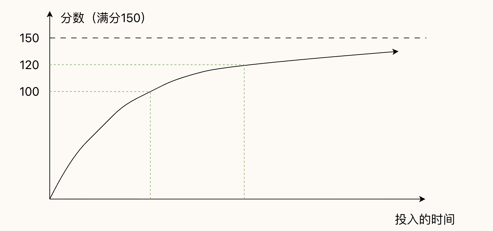

408
学习两大定律：廉价七成和体系化
廉价七成

廉价七成
知识点的重要程度有高低之分，掌握重点可以 “快速”
帮你提升到 110-120 分。
更高的分数需要投入极多的精力，性价比需要由你自己衡量。
知识点掌握的四个层次
学习英文单词 → 一般知识点
- 看到文字能够认出来 →
对于知识点细节只有基本印象，看到选项能选出正确答案（C）
- 听到单词能够认出来 →
稍作思考可以想出来（B）
- 可以在写作中运用 →
可以快速的公式化的写出来（A）
- 可以在口语中运用 →
知道会怎么考，甚至可以自己去出相似的题目（S）
以上四个层次，优先级从高到低使用 S、A、B、C
四个字母来标注。
体系化
不通过单一媒介学习知识，牢靠的知识体系是一张复杂的网络结构，每个知识点要和其他知识点建立足够多的连接。
- 对于知识有图形化的想象
- 学习 和 实践/做题 结合
- 把握知识的底层脉络
- 口述知识（费曼学习法）